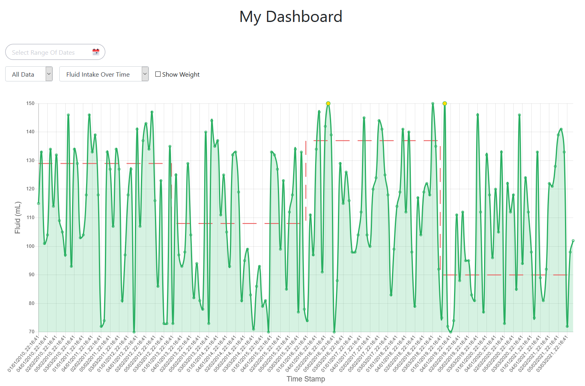
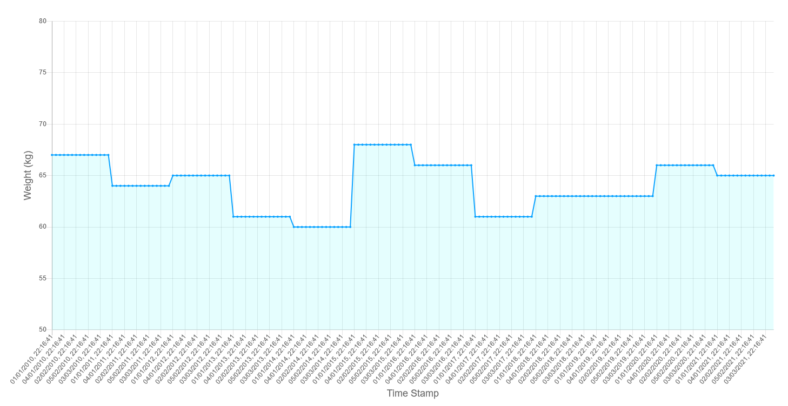
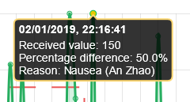
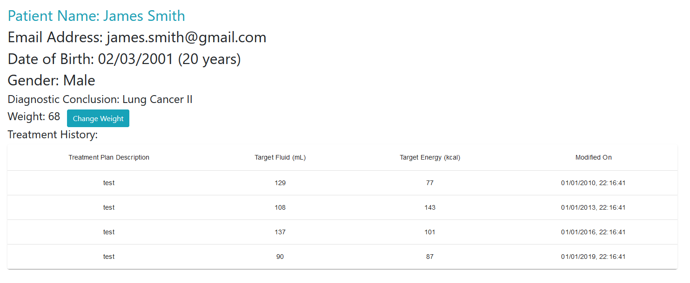

Patients
A patient user will have most of the dashboard functionalities similar to a clinician. Patients will only be able to access their treatment data.
Login
Enter the credentials of your registered patient account.

Patient Dashboard
This is the patient dashboard which consists of several different components.

Filter the Data
Filter by Specific Date Range
The component on the top left of the dashboard is used to select the date range to filter.


By selecting a start date and an end date, the dashboard will filter the data only within the date range you selected.

Filter By Day, By Month or By Year
The default setting of filtering is All Data, change it to By Day, By Month or By Year according to your preference.


Data Type
Our web app dashboard supports two types of data type: Fluid Intake Over Time and Energy Intake Over Time. The default setting is Fluid Intake Over Time, you can change to the energy intake graph by using the dropdown.
Fluid Intake Over Time

Energy Intake Over Time

Show Weight
To display the weight graph, tick the Show Weight box. A separate weight against time graph will be shown in the blue line below the original graph.

Patient Feedback
Hover on the point of the graph to see the percentage difference of received and target feed and click on it to give the clinician feedback at the specific time. In the future, the feedbacks can be helpful to make better-suited treatment plans for patients.


Access to Patient Information
On the top left of the patient dashboard, there is a My Information link to the patient info page.
Patient Information
Browse Information
This page displays all patient’s information including name, email, date of birth, age, gender, diagnostic conclusion, weight and treatment history. These data will be accessible by both the clinician and the patient.

Change Weight
On the Patient Info page, you can also update the patient's weight by clicking on the Change Weight button. Submit a positive number to update the new weight of the patient.